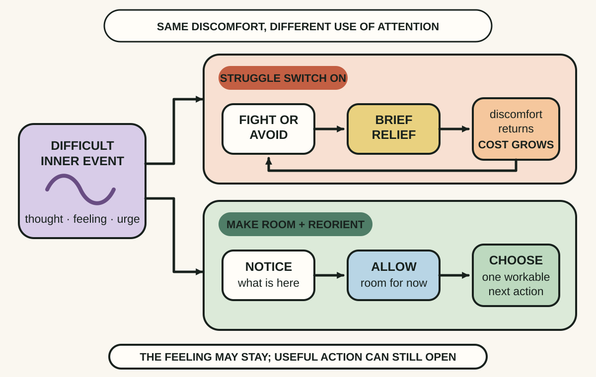
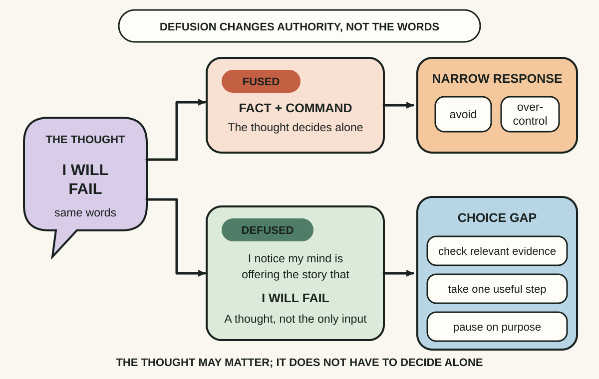
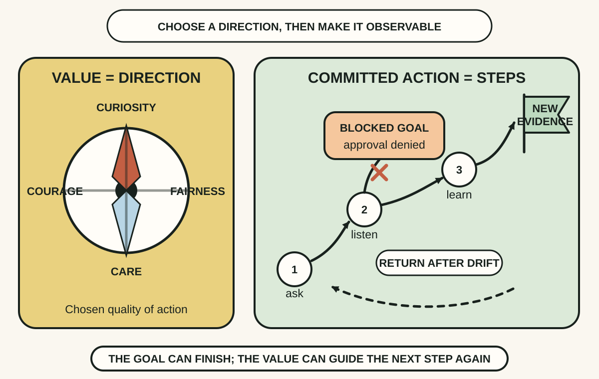

Daily lesson ·
The Happiness Trap
Build psychological flexibility by making room for difficult inner experiences, loosening the grip of unhelpful thoughts and taking a small step in a chosen direction.
Idea 1
Stop feeding the struggle #
The idea
Harris argues that difficult thoughts, feelings, memories and sensations are normal parts of being human. The extra trap begins when getting rid of them becomes the condition for living, so attention and behaviour narrow around control, avoidance or escape.
His struggle-switch metaphor separates the original discomfort from the secondary struggle added around it. A control strategy can bring short-term relief and still be unworkable when its repeated cost in time, energy, health, relationships or meaningful action becomes larger than the problem it was meant to solve.

Why it matters
Repeated attempts to control an inner experience can quietly become the organising problem. Seeing the added struggle separately creates a choice about where to spend effort without pretending the original pain is pleasant or unimportant.
Apply it today
Choose one mild, familiar discomfort and write two short lines: What showed up, and What I did to make it disappear.
Ask whether that response worked only for the next minute or also helped the next hour, day and valued activity. Keep useful problem-solving; question the part that mainly feeds avoidance.
Caveat or failure mode
Acceptance is not resignation, approval or passive endurance. Change an unsafe situation, solve a solvable external problem and seek appropriate support when needed. The target is unnecessary struggle with inner experience, not every effort to improve reality or regulate emotion.
Idea 2
Hold thoughts lightly enough to choose #
The idea
Harris describes cognitive fusion as becoming so entangled with a thought that it functions like a fact, command or complete description of the self. Defusion does not prove a thought false; it helps you notice it as words, images or a story produced by the mind.
A small shift in language, such as noticing that you are having a thought, can create distance between the mental event and the next action. The useful question becomes whether following this thought here serves the situation and the person you want to be.

Why it matters
A thought can be vivid, repeated and emotionally charged without being a complete instruction. Naming the thinking process makes evidence and values available again when an automatic story was about to decide alone.
Apply it today
Catch one recurring evaluative thought in a low-stakes moment and write it exactly once without arguing with it.
Prefix it with I notice my mind is offering the story that, then identify one fact you can check and one action you can still choose.
Caveat or failure mode
Defusion is not dismissal. Some thoughts identify real danger, injustice, error or unmet needs and deserve action. Use distance to examine a thought more clearly, not to ignore evidence, silence emotion or avoid a necessary decision.
Idea 3
Use values as directions, then take a step #
The idea
Harris distinguishes values from goals. A goal is an achievable outcome, while a value is a chosen quality of action, such as curiosity, courage, fairness or care, that can be expressed repeatedly without ever being completed.
Committed action turns that direction into behaviour. Commitment is not a promise to perform perfectly or a prediction that discomfort will vanish. It is a willingness to take a values-consistent step, notice barriers and return to the direction after going off course.

Why it matters
Goals can be delayed, denied or completed, but a chosen quality can still shape the next action. This prevents a blocked outcome or difficult feeling from suspending every meaningful move.
Apply it today
Name one situation where you feel stuck and choose one quality you want your behaviour to express there, not an outcome you want another person to deliver.
Write a step that takes two minutes or less, has a visible finish and moves in that direction even if discomfort comes along.
Caveat or failure mode
Values are chosen, not moral weapons or obligations borrowed from other people. They do not remove material barriers, unequal power or the need for skills and resources. If a step repeatedly fails, change its size, timing or support instead of using the value to shame yourself.
Knowledge check · 6 questions
Learning check
Answer all 6, then check your answers. Your first result stays in this browser, and each explanation appears after you check. A 3-question review can appear on the homepage from tomorrow.
6 questions not yet answered.
Today's experiment · 10 minutes
Make one flexible choice visible
- Choose one mild situation where an uncomfortable feeling or sticky thought has been delaying a useful action.
- Write three lines: What showed up, What my mind is telling me, and What the control struggle is costing.
- Add a noticing frame to the thought without trying to disprove it.
- Choose one value you want the next action to express and define a step that takes two minutes or less.
- Take the step, then record whether the discomfort changed and whether useful action became more available.
Observable result: You finish with one completed values-based action and separate observations about emotional relief and practical workability.
Retrieval practice
Spaced recall
- From The Good Life: how does WISER separate an observable event from the first story added to it?
- From The Checklist Manifesto: where could a brief pause protect a chosen action before an avoidance loop takes over?
Verification
Source notes
These links support the attributed claims and edition details; applications and extensions are labelled in the lesson.
- Penguin Random House: The Happiness Trap, second edition details
- Russ Harris: introduction and first chapter with 2007 publication record
- Russ Harris: free resources for the second edition
- Russ Harris: ACT workshop material on struggle, defusion and values
- Association for Contextual Behavioral Science: six core ACT processes
- Clinical Psychology Review: 2026 comparative meta-analysis of ACT trials
One-sentence takeaway